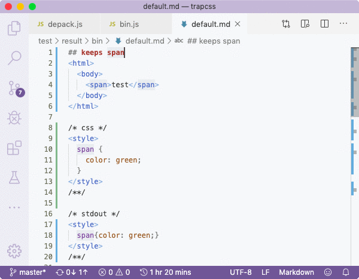
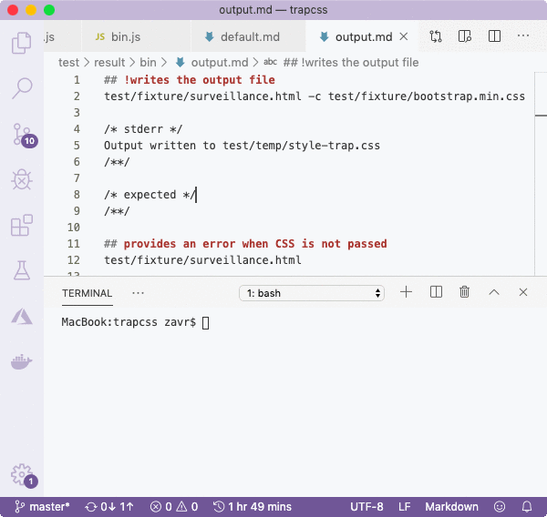

###! Fork Testing
We already used some mask testing in , but one of the best applications of masks is to test forks. A fork is a separate Node process spawned from a script itself. They are completely independent processes with separate PIDs, but the fork will by default exit with its parent. Since our binary is a Node program, to test it properly, we need to spawn it via the `child_process` module. _Zoroaster_ provides an abstraction over fork testing, if you pass ``fork`` property to the mask constructor.
By default, the input from mask result is split by whitespace to provide arguments to fork, but we can provide the `getArgs` method to expand, or override the arguments list. We'll use a testing context called _TempContext_ to write the input of the mask into a temp file (). For each test, a blank ``test/temp`` dir will be created, and removed at the end. The *write* method returns the path to the new file, so that we can pass it to the program. We then extract the CSS from within the ``style`` tag in the mask result (need to wrap it in the style tag for syntax highlighting), and also write it to the temp dir. The new arguments, therefore are: [path-to.html -c path-to.css].
As a preprocessor for output, we also want to wrap the `stdout` in style tag also, for syntax highlighting. The tag itself has no meaning to tests themselves, it only allows US as developers to work comfortably with mask results. _NodeTools_ is all about usability, and we can even do some cools stuff as folding individual specs in the result file, since they are under `##` heading of a markdown file.

Additionally, we had to get the path to the fork from the context's static `BIN` property, that accounts for the testing environment:
```js
// test/context/index.js
let BIN = 'src/BIN'
if (process.env.ALAMODE_ENV == 'test-compile') {
console.log('Testing compile bin...')
BIN = 'compile/bin/trapcss'
}
```
This will be useful later after we've compiled the binary with _Closure_.
We only do a couple of tests to make sure that the binary doesn't throw any errors and processes arguments correctly. Most of the unit tests were done on the API, therefore it'd be redundant to test the same functionality twice. However, we could potentially construct a mask that would use input from mask results to the API to adapt them to pass to the CLI, but I won't do it here. Since mask results are just text files, they can be reused according to your imagination.
The second test is almost the same as the first one, except that we add the output argument to the list of arguments from the input, instead of completely overriding the arguments array. The path to the output is generated with the `resolve` method from the temp context, which we passed in the *context* property. The question is then how to test the output of the program? To do that, we need to implement the ``getResults`` method that will also receive the context, so that we can call the ``read`` method from testing API. As previously, we want to wrap the output for syntax highlighting.
The mask result provides 2 properties: `stderr` and `expected`. We're not testing for `stdout` since there's no output on this stream, and we implemented the ``getResults`` method to read the expected result from a file in the temp folder.
As previously, we could leave the mask result values blank, and run tests in interactive mode , for the testing framework to populate them for us.

For the final test, we'll make the simplest mask possible, by only passing the path to the binary:
```js
export const stress = makeTestSuite('test/result/bin/stress', {
fork: Context.BIN,
})
```
When there's no additional configuration, only *stdout*, *stderr* and *code* properties are asserted on.
In the first test, like before, we passed paths to HTML and CSS, but we didn't need to use the temp context since the output is printed to stdout. In the second test we added the `code` property to test that the fork will exit with code _1_ when a path to the CSS file is not passed, and that *stderr* contains the error message.
As you can see, testing forks is very simple with _Zoroaster_ that provides means to setup tests to run parallel processes, and assert on outputs. Even if a program required interaction from *stdin*, such as entering answers, we could still test it by either providing the `[stderr]Inputs` property of the mask, or via the `inputs` [property](https://raw.githubusercontent.com/artdecocode/expensive/885e62298c05b75eedb2dbb298e8544823d1a0c2/test/result/fork/register.md) in the mask result.
Fork testing is more expensive as it requires time to spawn forks, therefore it's preferable to do as many unit tests as possible, and design binary in such a way as it would be possible to require commands called from binary in tests, instead of spawning forks. That's why the template comes with the `init` command, but it could be removed now since our binary is fairly straight-forward.